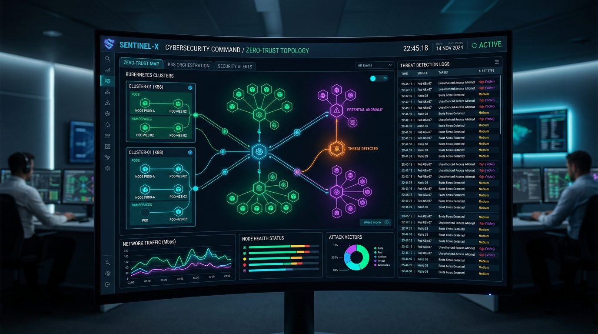

TÉLÉCOMS & RADIOFine-Tuning Radio & Optimisation 54 Sites FAI
Fine-tuning et recalibrage complet de 54 sites radio pour le FAI Cieluxtelecom à Kinshasa. Analyse de la propagation RF, ajustement des faisceaux hertziens, équilibrage de charge et élimination des interférences spectrales.
Impact Réel : Élimination des goulots d'étranglement, optimisation de la zone de
couverture et signal haut débit stable pour des milliers d'abonnés.
Alvarion WiMAX
Faisceaux Hertziens
Cisco Routing
Analyseur RF
NOC Supervision